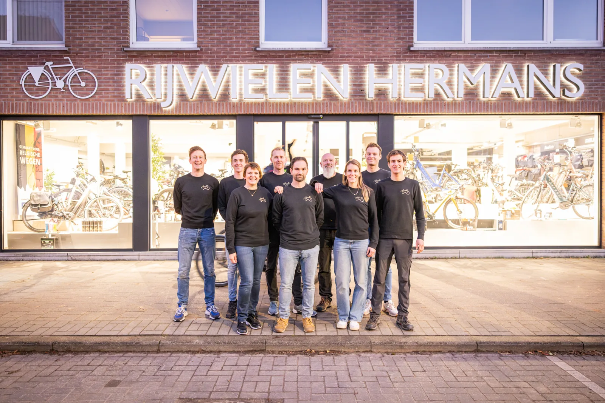
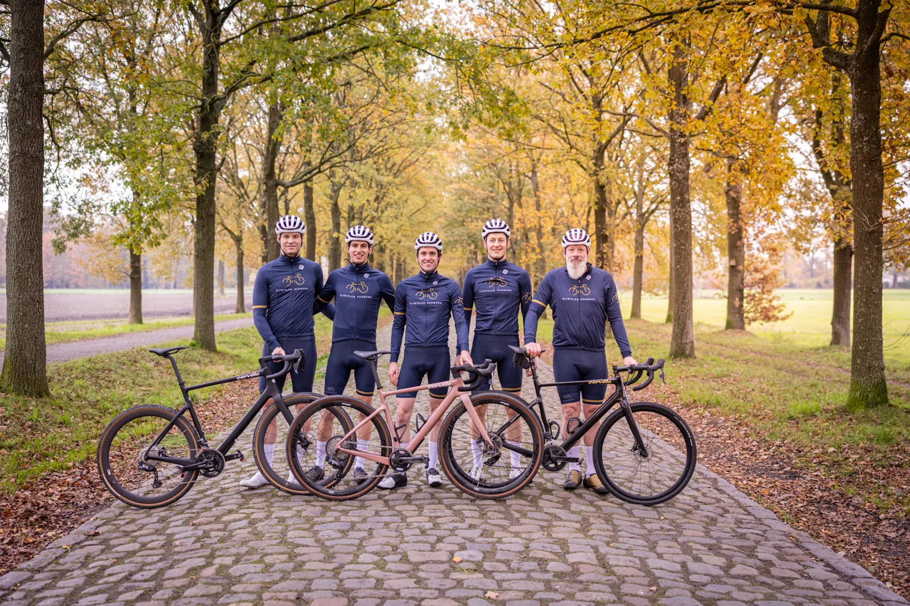
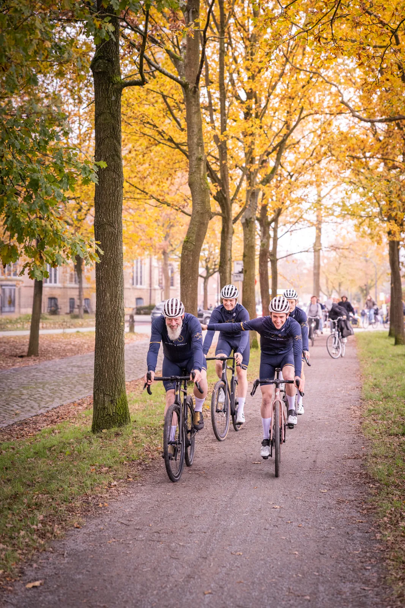
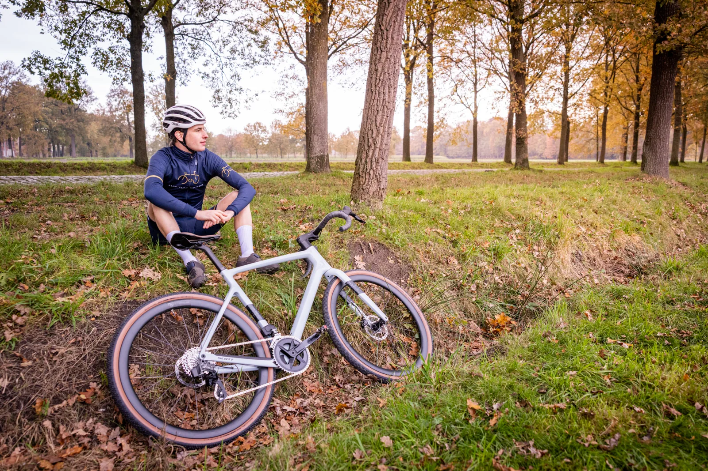
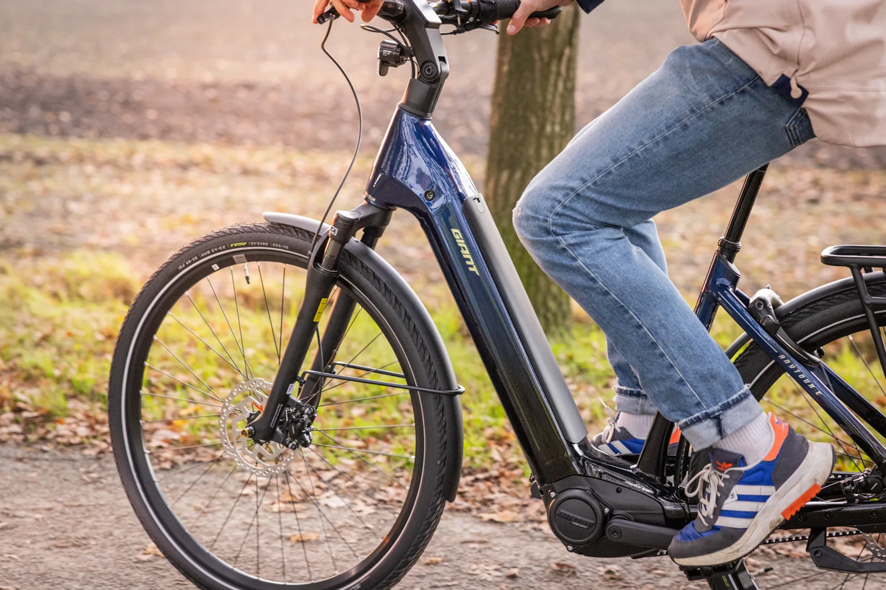
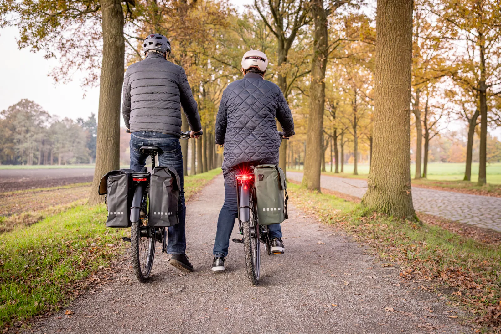
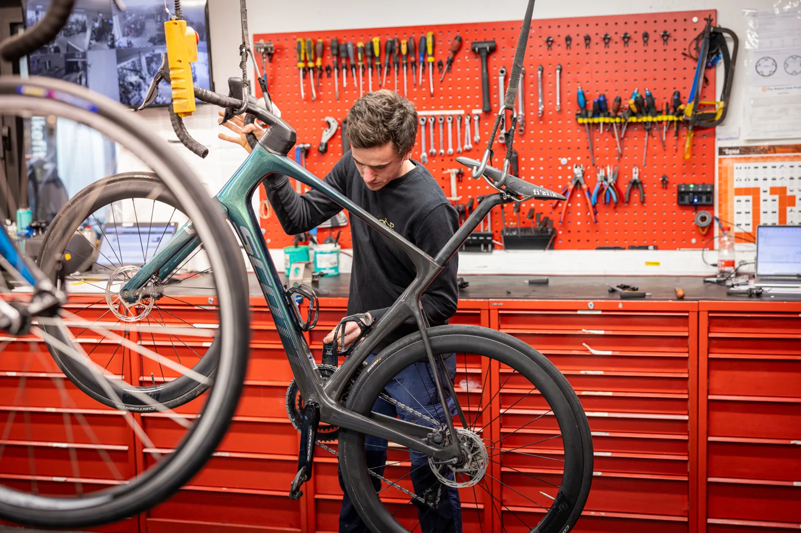
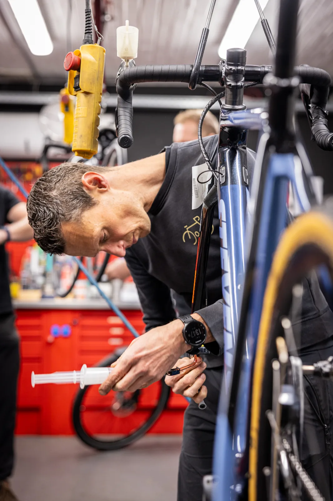
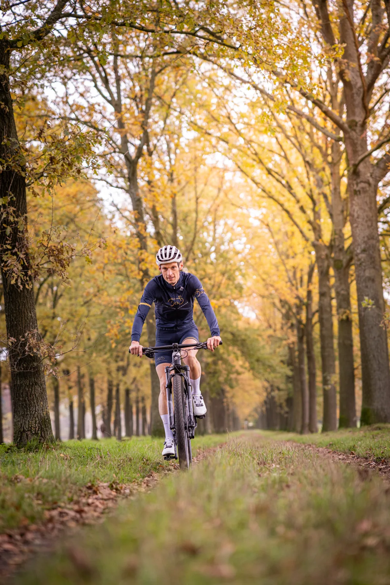

Van een garage in Rijkevorsel naar Westmalle
- 1989
Jef Hermans ruilt zijn te klein geworden garage in Rijkevorsel voor een echte fietsenwinkel in Westmalle. Zijn hobby wordt zijn beroep.
- 2019
Vincent neemt de fakkel over, met dezelfde goesting. Sinds de overname is er niemand van de ploeg vertrokken, en daar zijn we best trots op.
- Elke donderdag
Dan is de winkel dicht en trekken we er met de ploeg op uit. Ook over de middag gaat het meestal over fietsen.
Een fiets die bij je past
Of je nu elke dag naar het werk rijdt of in het weekend kilometers maalt: kom langs, test en kies met iemand die zelf rijdt.

Racefietsen
Gemaakt om te knallen: snelheid, klimvermogen en souplesse.

Gravel bikes
Van asfalt naar grind en bospad, en gewoon verder.

E-bikes
Voor de dagelijkse rit naar het werk en voor lange tochten.

Stad en trekking
Stevig, comfortabel en klaar voor elke dag.
Ook in de winkel
Vandaag binnen, morgen weer rijden
Met een afspraak is je fiets doorgaans binnen de 24 uur klaar. Bel ons even, dan schatten we samen in hoeveel tijd je herstelling vraagt.
- Zeven mecaniciensOok zonder afspraak blijft de wachttijd meestal kort.
- Elektrische vervangfietsZo sta je niet stil terwijl je eigen fiets binnen is.
- Elke fiets is welkomOok als je hem ergens anders kocht.
- Van lekke band tot nazichtVersleten ketting, remmen, of een volledige beurt.


Bikefitting
Zadelhoogte, stuur en pedalen nauwkeurig afgestemd op jouw lichaam en rijstijl. Meer comfort, minder kans op blessures.
Fietsleasing
We werken met alle grote leasemaatschappijen. Kom eerst testen in de winkel, dan maken we een offerte op maat.

Perfecte service gekregen van een top team. Vincent en zijn ploeg hebben alles in huis om elke klant tevreden te krijgen, goed materiaal en ook de kennis om je van de beste raad en producten te voorzien.
Plan je onderhoud
Laat weten wat je fiets nodig heeft, dan staat je mail meteen klaar. Voor een herstelling bel je ons liefst even, dan plannen we het samen.
Bel tijdens de openingsuren03 311 65 97- Maandag, dinsdag, woensdag
- 8.30 tot 12.15 en 13 tot 18 uur
- Donderdag
- Gesloten
- Vrijdag
- 8.30 tot 12.15 en 13 tot 18 uur
- Zaterdag
- 8.30 tot 17 uur
- Zondag
- Gesloten